Ödemeyi kaydetme
Nakit, kart, nakit + kart ve veresiye satışları kaydedin. Nakit alınan tutarı ve para üstünü görün; satışa müşteri adı veya açıklama ekleyin.
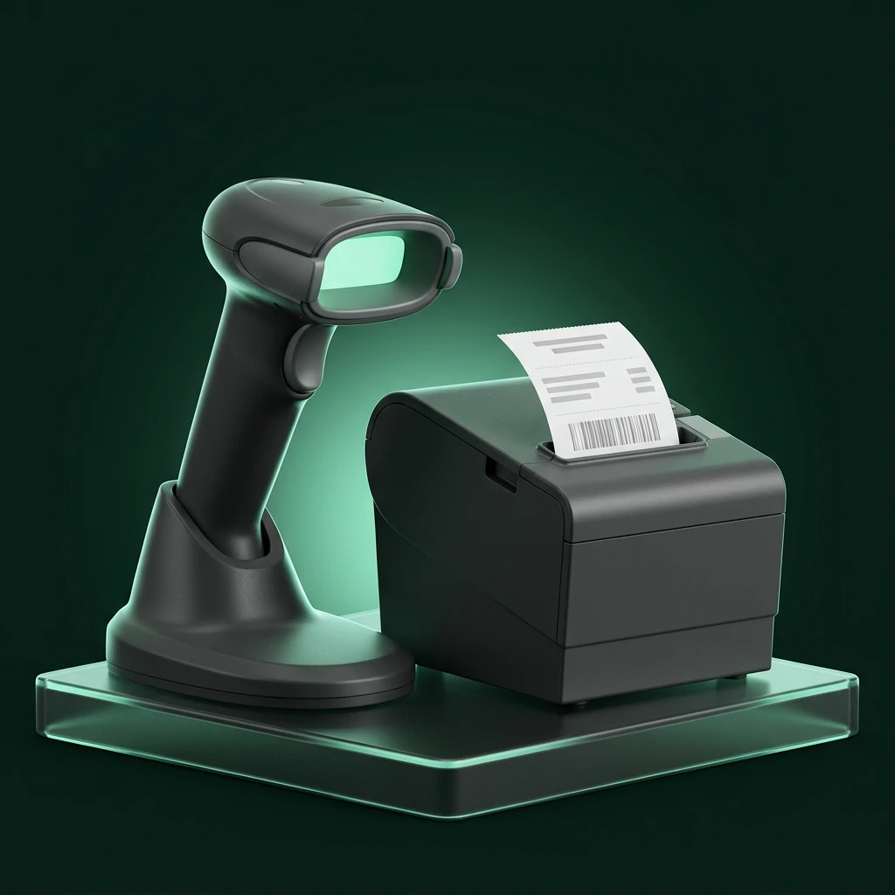
Programdaki sol menünün sırasıyla, 11 çalışma alanını keşfedin. Neler yapabileceğinizi ve hangi işlemlerin ek kurulum gerektirdiğini görün.
Windows, Portable ve Android doğrudan demo paketlerinde ayrıca Pro modül kilidi yoktur. 1.000 tamamlanmış satış sonrası lisans gerekir. İlk kurulumda lisans anahtarı istenmez; kullanıcı/PIN girişi ayrıdır. Harici servis ve donanım gereksinimleri devam eder.
MOS BARCODE / HIZLI SATIŞ
Kasadaki iş akışınızı tek ekranda tamamlayın.
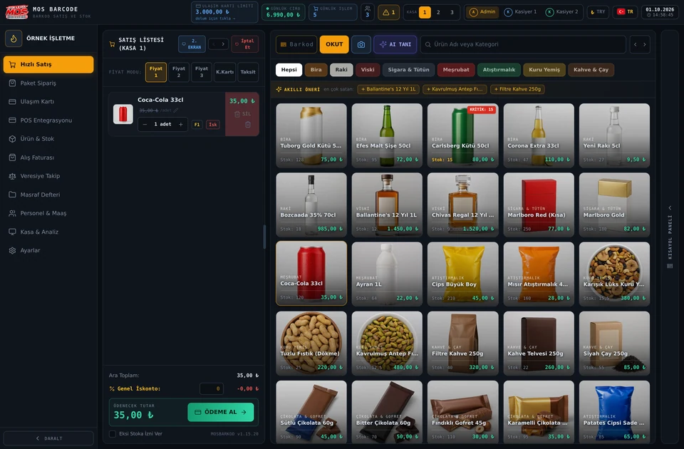
Görseli büyüt ↗Nakit, kart, nakit + kart ve veresiye satışları kaydedin. Nakit alınan tutarı ve para üstünü görün; satışa müşteri adı veya açıklama ekleyin.
Barkod okuyucuyla ürün ekleyin; ürün adına ve kategoriye göre arayın. Uygun cihazlarda kamera ile barkod okuma seçeneğini kullanın. Sepette miktarı, indirimleri ve ürünleri kontrol edin.
F1 / F2 / F3 satış fiyatlarıyla çalışın. Adet ve ağırlıkla satılan ürünleri ürün kartındaki birime göre işleyin. Terazi bağlantısı için desteklenen donanım ve bağlantı ayarları gerekir.
Kasa/sepet çalışma alanları arasında geçiş yapın. Satış geçmişini inceleyin ve desteklenen fiş/yazdırma seçeneklerini kullanın.
Sepette adedi artırıp azaltın, satır iskontosu uygulayın veya ürünü kaldırın. Ara toplam, iskonto ve ödenecek tutarı aynı alanda kontrol edin.
Uygun cihazda kamerayla barkod okutun; mühtelif ürün panelini kullanın. Desteklenen ikinci ekranı açarak sepeti ve toplamı müşteriye gösterin.
Bilmeniz gereken: Kart ödeme kaydı, bankadan para çekildiğinin doğrulaması değildir. Cihaz entegrasyonu ayrıca kurulmalıdır.
Bu akışı ücretsiz demoda keşfedin ↗MOS BARCODE / PAKET SIPARIŞ
Siparişten teslimata kadar işin durumunu takip edin.
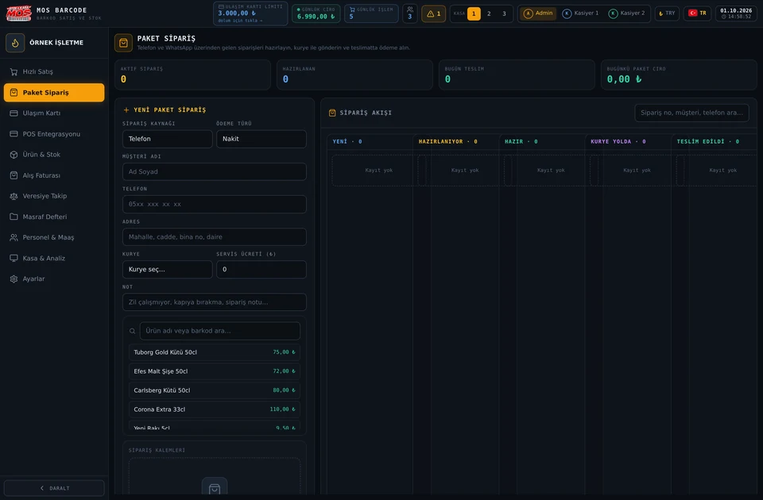
Görseli büyüt ↗Hazırlanıyor, hazır ve teslimat aşamalarını takip edin. Kurye seçin; servis ücretini ve teslimat notlarını kayda dahil edin.
Telefon veya WhatsApp üzerinden aldığınız siparişi müşteri adı, telefon, adres ve notuyla kaydedin. Ürünleri sipariş sepetine ekleyin.
Nakit, POS veya karma ödeme bilgilerini girin. Aktif siparişleri, bugün teslim edilenleri ve paket satış cirosunu ekran özetlerinden inceleyin.
Siparişleri Yeni, Hazırlanıyor, Hazır, Kurye Yolda ve Teslim Edildi sütunlarında izleyin. Sipariş numarası, müşteri veya telefonla kayıt arayın.
Ürünleri siparişe ekleyin; ara toplamı, servis ücretini ve genel toplamı kontrol edin. WhatsApp özetiyle sipariş bilgisini paylaşmaya hazırlayın.
Bilmeniz gereken: WhatsApp seçimi otomatik sipariş alma botu değildir. Bu modül Ayarlar → Modül Yönetimi üzerinden kapatılabilir.
Bu akışı ücretsiz demoda keşfedin ↗MOS BARCODE / ULAŞIM KARTI
Dolum hareketlerinizi ve kullanılabilir limitinizi kayıt altında tutun.
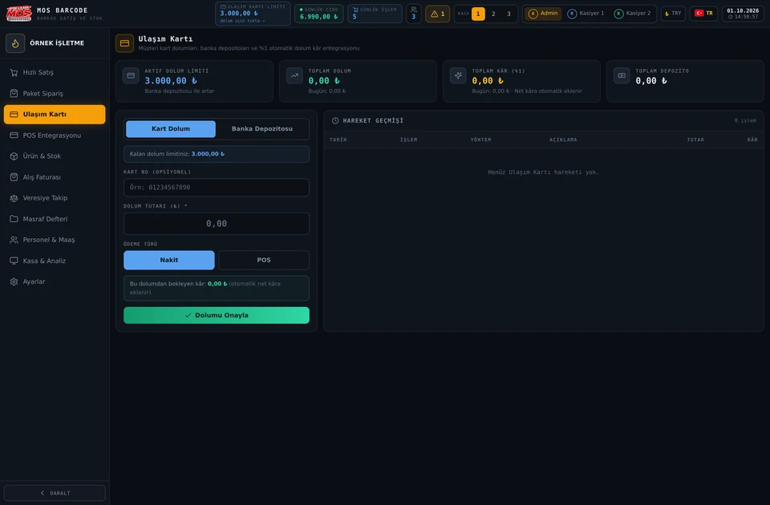
Görseli büyüt ↗Yatırılan depozitoyu kaydederek takip edilen limiti artırın. Dolum ve depozito hareketlerini tarihleriyle görüntüleyin.
Dolum tutarı, kart numarası ve nakit/POS ödeme kanalını girin. Program kayıtlı dolum limitinin yeterli olup olmadığını kontrol eder.
Günlük ve toplam dolum tutarlarını, uygulamadaki marj tanımına göre hesaplanan kazanç göstergelerini inceleyin.
Kart Dolum ve Banka Depozitosu alanları farklı hareketler oluşturur. Depozito takip edilen limiti artırır; dolum kullanılabilir limitten düşer.
Tarih, işlem türü, ödeme yöntemi, açıklama, tutar ve hesaplanan marjı geçmiş tablosunda inceleyin. Bu kayıtlar fiziksel karta otomatik yükleme yapmaz.
Bilmeniz gereken: Bu ekranın kayıt oluşturması, gerçek ulaşım kartına bakiye yükleyen bir kurum bağlantısı olduğu anlamına gelmez. Kurumsal yetki ve cihaz gereksinimleri ayrıca doğrulanmalıdır.
Bu akışı ücretsiz demoda keşfedin ↗MOS BARCODE / POS ENTEGRASYONU
Ödeme cihazınızın bağlantı ayarlarını tek yerden yönetin.
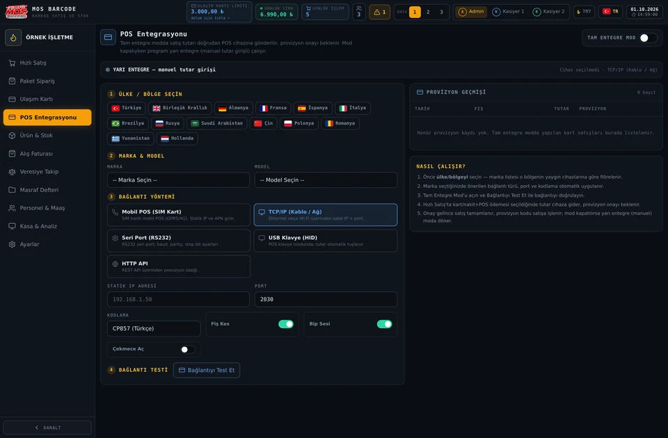
Görseli büyüt ↗Marka/model ve bağlantı tipi seçeneklerini belirleyin. IP/port, seri port veya ilgili API ayarlarını cihazınıza göre düzenleyin.
Desteklenen profile göre baud rate, veri bitleri, parity ve stop bit gibi seri bağlantı alanlarını; gerektiğinde API endpoint ve anahtarını yapılandırın.
Fiş kesme, sesli uyarı ve çekmece açma gibi ayarları uygun donanımda kullanın. Bağlantı testi ve durum alanlarını inceleyin.
Ülkeye göre marka/model seçeneklerini inceleyin. Mobil POS, TCP/IP, seri port, USB veya HTTP API alanlarını desteklenen cihazınızın gereksinimine göre seçin.
Yarı entegre modda cihaz tutarı elle girilir. Tam entegre kullanım için sağlayıcı kurulumu ve gerçek bağlantı doğrulaması gerekir; provizyon geçmişini ilgili alanda izleyin.
Bilmeniz gereken: Bir markanın listede bulunması tüm modellerinin banka onaylı olarak çalıştığını garanti etmez. Gerçek ödeme, cihaz protokolü/SDK, sürücü ve sağlayıcı kurulumu gerektirir; kurulum öncesi modelinizi bildirin.
POS entegrasyonu ayrıca yıllık ücrete tabidir.
Bu akışı ücretsiz demoda keşfedin ↗MOS BARCODE / ÜRÜN & STOK
Ürün bilgilerinizi düzenleyin; stok hareketlerinizi görünür kılın.
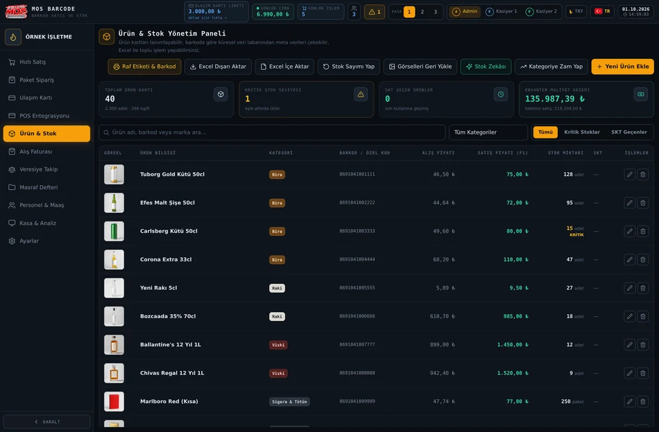
Görseli büyüt ↗Excel içe aktarma ekranında .xlsx, .xls, .csv ve .txt kaynaklarını kontrol ederek alanları eşleyin. Ürün listesini .xlsx olarak dışa aktarın; aktarım öncesi yedek alın.
Barkod, ürün adı, kategori, marka, gramaj/boyut, ölçü birimi ve görsel tanımlayın. Barkodsuz ürünler için EAN-13 üretme seçeneğini kullanın.
Alış maliyetini, birden fazla satış fiyatını ve ürünün KDV bilgisini yönetin. Ürün arama, filtreleme ve düzenleme işlemlerini aynı listeden yapın.
Stok sayımı oturumlarıyla farkları inceleyin. Raf etiketi/barkod basım araçlarını, ABC analizi, satış hızı ve stok ömrü tahminlerini kullanın.
Toplam ürün, kritik stok, son kullanma tarihi geçen ürünler ve envanter değerini özet kartlarında görün. Kategori ve durum filtreleriyle listeyi daraltın.
Kategoriye zam veya indirim oranı uygulayın. Ürün kartında farklı satış fiyatları, özel kod, tedarikçi ve kritik stok eşiğini ayrı ayrı düzenleyin.
Bilmeniz gereken: Stok analizleri kayıtlı verilere dayanır; satış veya kârlılık garantisi değildir. Yazdırma için uygun yazıcı/etiket ölçüsü ayarlanmalıdır.
Bu akışı ücretsiz demoda keşfedin ↗MOS BARCODE / ALIŞ FATURASI
Tedarikçi faturalarını ürün maliyetleriyle birlikte takip edin.
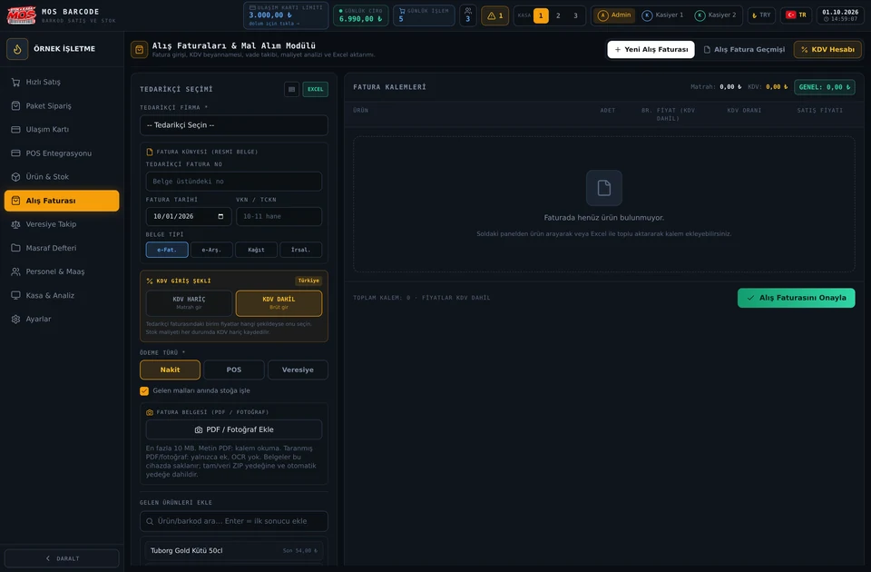
Görseli büyüt ↗KDV dahil TL toplamı ÷ KDV dahil döviz toplamıyla faturada kullanılan kuru hesaplayın. Gösterimde yuvarlanan kur, maliyet hesabında tam hassasiyetle uygulanır. Kalem/toplam uyumu kontrol edilir.
Tedarikçi, fatura numarası, tarih, ödeme türü, vade, ürün satırları ve KDV bilgilerini kaydedin. Ödeme geçmişini ve bekleyen faturaları takip edin.
PDF, PNG, JPEG veya WebP belge ekleyin. Desteklenen metin içerikli PDF tablolarından kalemleri okuyup ürünlere eşleyin ya da yeni ürün oluşturmayı seçin.
Okunan miktar, birim, net tutar ve KDV oranlarını gözden geçirin. Form aktarımı tek başına stok değiştirmez; son fatura onayında stok seçeneğini kontrol edin. Aynı tedarikçi + fatura numarasının tekrar kaydı engellenir.
Yeni Alış Faturası, Alış Fatura Geçmişi ve KDV Hesabı alanlarını kullanın. Fatura numarası veya tedarikçiyle arayın; kısmi/tam ödemeleri ve bekleyen tutarları takip edin.
Faturadaki birim fiyatın KDV dahil veya hariç olduğunu seçin. Belge türü, fatura tarihi, tedarikçi belge numarası ve vergi bilgilerini kaydedin; stok maliyeti KDV hariç tutulur.
Bilmeniz gereken: Ek dosya sınırı 10 MB; PDF okuma en fazla 30 sayfa. OCR yoktur: taranmış PDF ve fotoğraflar arşivlenebilir fakat kalemleri otomatik okunmaz. Her tedarikçi şablonu desteklenmeyebilir; bu modül e-fatura düzenleme/portal gönderimi taahhüdü değildir.
Bu akışı ücretsiz demoda keşfedin ↗MOS BARCODE / VERESIYE TAKIP
Müşteri alacağınızı ve toptancı hesabınızı birbirine karıştırmayın.
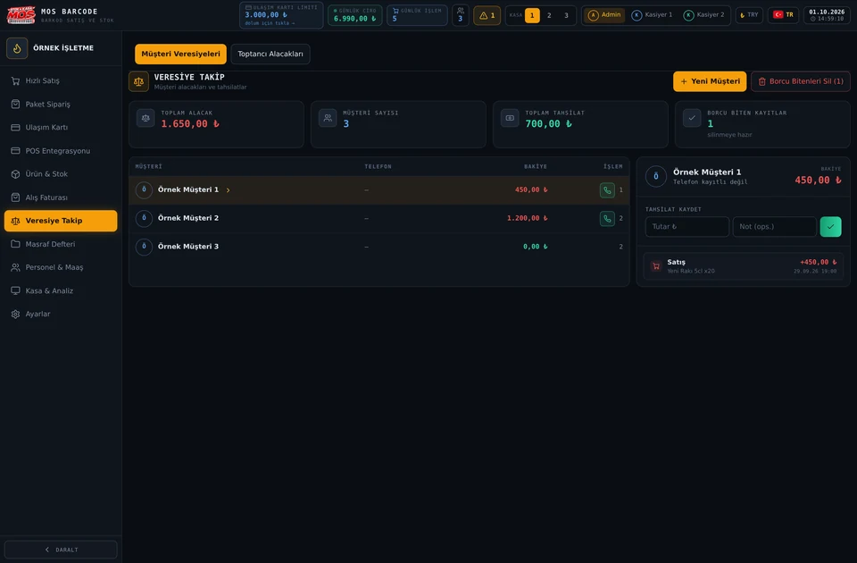
Görseli büyüt ↗Aynı toptancı için TL, USD, EUR ve diğer desteklenen para birimlerini ayrı hesaplarda tutun. 500 USD ödeme − 120 USD mal çekişi = 380 USD alacak. TL bakiyesinin yanında internetten alınan referans kurla yaklaşık USD karşılığı ve kur tarihi görünür.
Müşteri adı ve telefonu ile hesap oluşturun. Veresiye satışları ve tahsilat hareketlerini inceleyin; bakiye ve açıklamaları takip edin. Telefonu kayıtlı müşteriye WhatsApp borç hatırlatma mesajı hazırlayın.
Müşterinizin doğrudan toptancıya yaptığı ödemeyi kaydedin. KDV dahil ürün faturaları ve iade/kapatma tutarları düşüldükten sonra alacağınızı görün. Negatif bakiye toptancıya borcunuz olarak gösterilir.
“Alacağımdan Ürün / Mal Çek” ile kayıtlı alış faturasını seçin veya belge numarası ve tutarı girin. Kaydetmeden önce kalan bakiyeyi görün. Aynı fatura ikinci kez düşülemez; iptal edilen hareket geçmişte kalır ve tutarı bakiyeye geri gelir.
Müşteri seçildiğinde satış ve tahsilat geçmişini birlikte görün. Yeni tahsilata tutar ve açıklama ekleyin; kalan bakiyeyi müşteri kartından izleyin.
Toplam alacak, müşteri sayısı, tahsilat ve borcu biten kayıtları üst kartlardan izleyin. Borcu bitenleri silme işlemi öncesinde yedek alın.
Bilmeniz gereken: Toptancı defteri kasa/POS geliri, stok, müşteri borcu veya alış faturasının ödeme durumunu otomatik değiştirmez. USD karşılığı yalnızca gösterimdir; para birimleri otomatik mahsuplaşmaz. İnternet yoksa kurun eski/eksik olduğu belirtilir.
Bu akışı ücretsiz demoda keşfedin ↗MOS BARCODE / MASRAF DEFTERI
Günlük giderlerinizi küçük notlar yerine düzenli kayıtlarla yönetin.
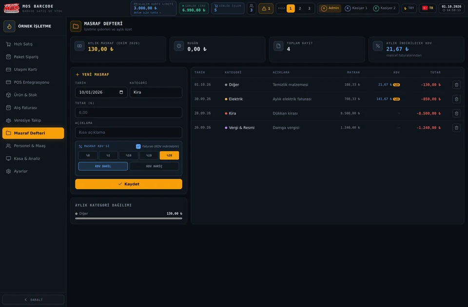
Görseli büyüt ↗Gidere ait KDV oranı ve dahil/hariç bilgilerini kaydederek ilgili raporların verisini tamamlayın.
Tarih, kategori, tutar ve açıklamayla masraf ekleyin. Kira, elektrik, Yemek ve Araç Yakıt gibi kategorilerle harcamalarınızı ayırın.
Giderleri kayıt listesinde inceleyin. Kasa/analiz ekranındaki masraf ve kâr göstergelerinde bu kayıtların etkisini değerlendirin.
Ay içindeki giderleri kategori dağılımında görün. Tarih, kategori, açıklama, matrah, KDV ve toplam tutarı kayıt tablosunda karşılaştırın.
Faturalı gider seçeneğiyle KDV oranını ve dahil/hariç giriş türünü belirleyin. Aylık indirilecek KDV göstergesi kayıtlarınıza dayanır; mali müşavir kontrolünün yerine geçmez.
Bilmeniz gereken: Raporlar girilen kayıtların doğruluğuna bağlıdır; program resmî muhasebe ve mali müşavir kontrolünün yerine geçmez.
Bu akışı ücretsiz demoda keşfedin ↗MOS BARCODE / PERSONEL & MAAŞ
Personel bilgilerinden aylık ödemelere kadar tek bir takip alanı.
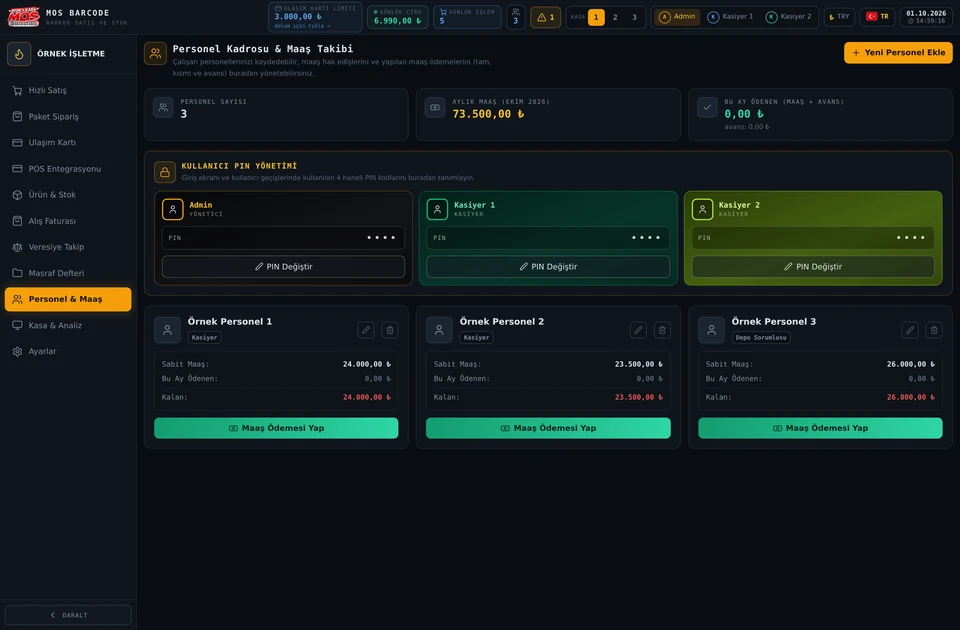
Görseli büyüt ↗Maaş veya avans ödemesini tutar ve açıklamayla kaydedin. İlgili ayın toplam maaş yükünü ve yapılan ödemeleri inceleyin.
Ad soyad, görev, telefon ve aylık maaş bilgilerini tanımlayın; mevcut kartları düzenleyin.
Yetkili kullanıcıyla Admin/kasiyer giriş PIN’lerini yönetin. İlk kurulumdaki Admin PIN’i 0000’dır; gerçek işletme verisi girmeden önce değiştirin.
Personelin sabit maaşını, bu ay ödeneni ve kalan tutarı aynı kartta görün. Maaş veya avans ödemelerine açıklama ekleyerek ödeme geçmişini takip edin.
Personel sayısı ve aylık maaş toplamını üst bölümde inceleyin. Admin ve kasiyer PIN değişikliklerini yetkili hesapla yapın; personel kartını kullanıcı yetkisiyle karıştırmayın.
Bilmeniz gereken: Maaş takibi otomatik banka ödemesi veya resmî bordro/SGK bildirimi değildir. Kullanıcı yetkileri ilgili ekranlarda geçerlidir.
Bu akışı ücretsiz demoda keşfedin ↗MOS BARCODE / KASA & ANALIZ
Günlük hareketlerden dönem sonuçlarına kadar işinizi rakamlarla izleyin.
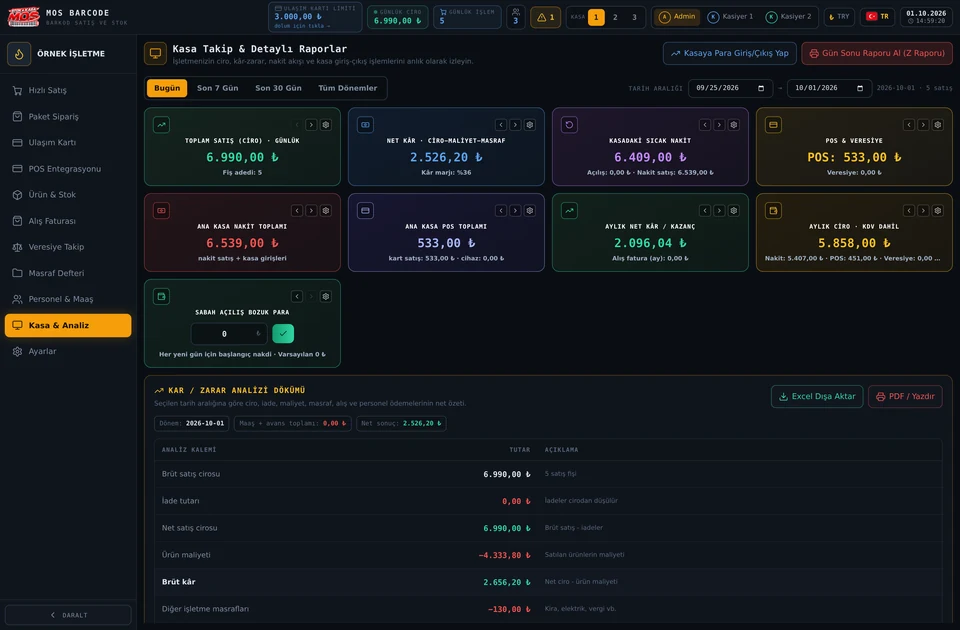
Görseli büyüt ↗Aylık ciroda kayıtlı KDV dahil nakit + POS + veresiye satış tutarları kullanılır. Tahsilat, devir veya POS hesaba geçişi ikinci kez satış cirosu olarak sayılmaz.
Nakit, POS ve veresiye satışları; tahsilatları, kasa hareketlerini ve işletme masraflarını ilgili özetlerde inceleyin.
Ürün maliyeti, iadeler, işletme masrafları, maaş ve avans ödemelerinin etkisini inceleyin. Tarih/dönem filtreleriyle sonuçları karşılaştırın.
Uygulamadaki POS tahsilat modeli ertesi yerel takvim gününü, hafta sonu dahil ve komisyonsuz kabul eder. Gösterge kartlarının görünümünü özelleştirin.
Bugün, son 7 gün, son 30 gün veya özel tarih aralığını seçin. Kâr/zarar dökümünü Excel ya da PDF/yazdır seçenekleriyle incelemeye hazırlayın.
Kasaya para giriş/çıkışını açıklamasıyla kaydedin. Satış geçmişindeki iade işlemlerini ve Gün Sonu Z Raporu seçeneklerini kullanın; yazılım raporu mali cihaz belgesi değildir.
Bilmeniz gereken: Bankanızın gerçek valör ve komisyon koşulları farklı olabilir. Kur ve rapor göstergeleri, banka/muhasebe mutabakatı yerine geçmez.
Bu akışı ücretsiz demoda keşfedin ↗MOS BARCODE / AYARLAR
Programı işletmenizin düzenine ve cihazlarına uyarlayın.
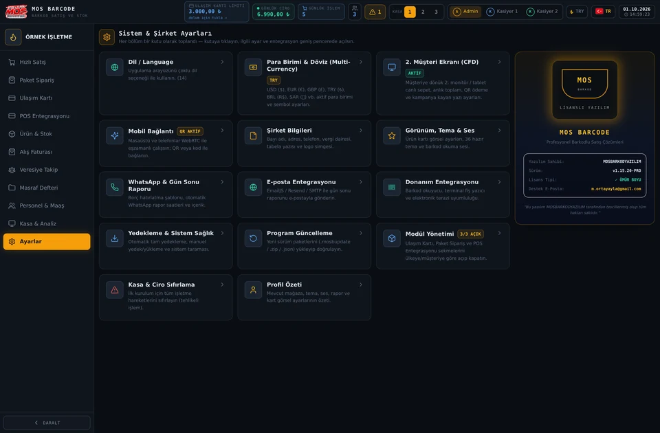
Görseli büyüt ↗Tam, veri veya ayar kapsamı seçin. Manuel/otomatik arşivler ve yapılandırılmış Google Drive/Dropbox seçenekleriyle yedek alın. Tam/veri ZIP yedekleri faturaya bağlı PDF/fotoğrafları ve toptancı hesaplarını içerir; eski JSON yedekleri okunabilir.
Şirket unvanı, adres, iletişim, vergi bilgileri ve logo ayarlarını düzenleyin. Dil, para birimi, tema, ürün kartı görünümü ve ses seçeneklerini belirleyin.
Barkod okuyucu, fiş yazıcı, elektronik terazi ve ikinci müşteri ekranı seçeneklerini yapılandırın. Uyum, platform/cihaz ve sürücüye göre değişir.
Desteklenen masaüstü–mobil bağlantı oturumunu QR/kod ile yapılandırın. WhatsApp şablonlarını ve e-posta rapor sağlayıcısını ayarlayın. E-posta servisleri kendi hesap/izin kurulumlarını gerektirir.
Program güncelleme paketlerini yönetip Paket Sipariş, Ulaşım Kartı ve POS Entegrasyonu sekmelerini açıp kapatın. Kasa/işletme sıfırlama gibi geri dönüşü zor işlemlerden önce tam yedek alın.
14 dil arasından arayüz dilini seçin. Aktif para birimini, sembolü ve döviz ayarlarını yönetin; referans kurların tarihini dikkate alın.
Hazır temaları, ürün kartı görünümünü, yazı ve fiyat renklerini düzenleyin. Barkod okuma sesini, ses düzeyini ve müşteri ekranındaki kampanya metnini ayarlayın.
Borç hatırlatma ve rapor şablonlarını düzenleyin. E-posta ve bulut yedekleme için kendi sağlayıcı hesabınızı yapılandırın; erişim izinleri ve internet gerekebilir.
Sistem taraması ve profil özetinden mevcut ayarları kontrol edin. Kasa/ciro sıfırlama geri dönüşü zor bir işlemdir; önce tam yedek alın ve yetkili hesapla ilerleyin.
Bilmeniz gereken: Cihaz içi yedek cihaz kaybına karşı tek başına yeterli değildir; dışarı indirin veya buluta aktarın. Mobil bağlantı her cihazda sürekli/otomatik eşitleme garantisi değildir; fatura ekleri canlı eşitlemeyle taşınmaz.
Bu akışı ücretsiz demoda keşfedin ↗Windows kurulumlu, Windows Portable veya Android demo ile başlayın.
Ücretsiz demoları görüntüle ↓(İlk kurulumda Admin şifresi: 0000)